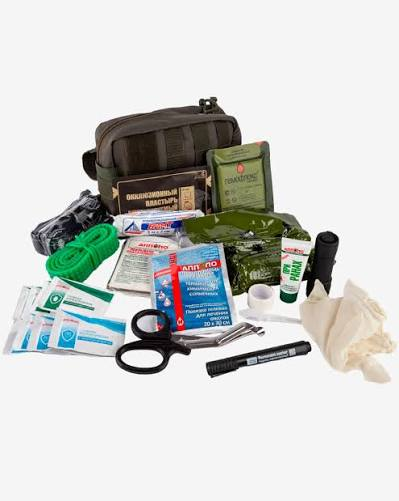
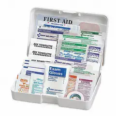
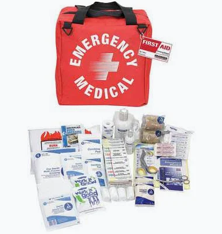

ОБЫЧНЫЕ ФОРМАТЫ
Аптечка как контейнер
Кейс, сумка или органайзер — основа для хранения.




- Собственный способ раскладки
- Инструкции отдельных производителей
- Организацию и учёт продумывает владелец
Быстрая реакция в экстремальной ситуации способна спасти жизнь близкому человеку.
SAFEBOX помогает заранее организовать аптечку: знать, что есть под рукой, где это лежит и где найти инструкцию.
Для дома и близких · Концепция продукта · Продажи готовятся к запуску

Личный опыт, из которого появился SAFEBOX.
За такое время, по рассказу основателя, состояние жены резко ухудшилось.
Рассказ от первого лица составлен по сообщениям основателя. Изображение — иллюстрация из материалов проекта, не фотография участника события.
«Жене стало плохо прямо у меня на руках. Свело конечности и рот, появились судороги, ей стало тяжело дышать. Всё произошло буквально за три минуты».
Я связывал это с сильным обезвоживанием. Дома оказался Зиртек — я дал его жене, и после этого ей стало легче. Именно так я пережил и запомнил тот момент.
Тогда я понял, насколько важно иметь нужные средства под рукой. Но просто положить лекарства в коробку недостаточно. Нужно ещё понимать, где что лежит, видеть названия и иметь возможность быстро найти информацию.
Так появилась идея SAFEBOX: заранее подготовленная система хранения, заметные разделы, крупные подписи, книжка и один QR. Чтобы подготовиться было проще, а порядок в аптечке был понятен не только тому, кто её собирал.
Это личная история, не инструкция по лечению. Причина эпизода и связь улучшения с препаратом в материалах проекта не установлены. В экстренной ситуации нужна профессиональная помощь.
Подробнее о проектеЖене. Мужу. Ребёнку. Родителям. Важно быть готовым помочь близкому человеку — именно рядом с ним вы можете оказаться в трудный момент.
Для этого и создаётся SAFEBOX: система хранения лекарств с понятной навигацией для человека без медицинской подготовки. Чтобы порядок, наличие средств и доступ к информации были продуманы заранее.
В момент, когда на кону жизнь или безопасность близкого, такая сумма уже не кажется главным вопросом.
Это рассуждение о ценности подготовки, а не цена SAFEBOX и не обещание результата. Стоимость продукта ещё не объявлена.
Подготовка не заменяет знания и медицинскую помощь. Но знакомиться со своей аптечкой лучше заранее.
Начать подготовку ↗Сравните подход к хранению и навигации.
Кейс, сумка или органайзер — основа для хранения.



Хранение, обозначения и материалы в одной структуре.
Слева — примеры форматов из предоставленной папки, справа — концепт SAFEBOX. Сравнение иллюстрирует организационный подход: оно не оценивает качество конкретных марок и не доказывает медицинское превосходство.
Слайд 8: устройство Premium-бокса и связь его элементов.
Исходный слайд показывает концепцию, а не утверждённые характеристики готового изделия. Медицинские материалы требуют отдельной проверки.